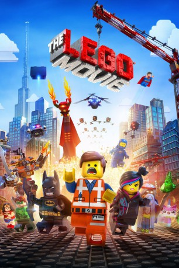

 
 IMDB-Wertung: 7.8 / 10
IMDB-Wertung: 7.8 / 10  Metascore:
Metascore: 
Der gutmütige Emmet wird eines Tages von der abenteuerlustigen Wyldstyle entführt. Sie glaubt, in dem Normalo den von einer Prophezeiung angekündigten Meisterbauer gefunden zu haben. Unter der Führung des alten Mystikers Vitruvius soll Emmet gemeinsam mit Batman und Wyldstyle den skrupellosen Bösewicht Lord Business aufhalten. Der möchte mit Hilfe zahlloser finsterer Schergen das Universum zusammenkleben - und somit die LEGO-Welt zerstören. Obwohl Emmet darauf beharrt, dass er nicht der Auserwählte ist, glaubt insbesondere Wyldstyle an seine außergewöhnlichen Fähigkeiten. Ebenfalls mit von der heldenhaften Partie sind Pirat Eisenbart, Weltraumfahrer Benny und das liebreizende Einhorn Kitty.
Jahr: 2014
Dauer: 100 Minuten
FSK: 0
Land: Australien Studio: Warner Bros.Tonspuren: DTS-HD - ,
Untertitel: Englisch, Deutsch,
Auflösung: 1080p (1920x800) Größe: 7219 MB
Genre: Animation/Trick, Action, Abenteuer, Komödie, Familie, Fantasy
Regisseur: Phil Lord, Christopher Miller
Drehbuch: Phil Lord, Christopher Miller, Dan Hageman, Kevin Hageman, Phil Lord
Soundtrack: Mark Mothersbaugh
Darsteller:
 Will Arnett als Batman / Bruce Wayne
Will Arnett als Batman / Bruce Wayne Elizabeth Banks als Wyldstyle / Lucy
Elizabeth Banks als Wyldstyle / Lucy Anthony Daniels als C-3PO
Anthony Daniels als C-3PO Will Ferrell als Lord Business / President Business / The Man Upstairs
Will Ferrell als Lord Business / President Business / The Man Upstairs Will Forte als Abraham Lincoln
Will Forte als Abraham Lincoln Dave Franco als Wally
Dave Franco als Wally Morgan Freeman als Vitruvius
Morgan Freeman als Vitruvius Jonah Hill als Green Lantern
Jonah Hill als Green Lantern Keegan-Michael Key als Foreman Jim
Keegan-Michael Key als Foreman Jim Liam Neeson als Bad Cop / Good Cop / Pa Cop
Liam Neeson als Bad Cop / Good Cop / Pa Cop Shaquille O'Neal als Shaq
Shaquille O'Neal als Shaq Nick Offerman als Metal Beard
Nick Offerman als Metal Beard Cobie Smulders als Wonder Woman
Cobie Smulders als Wonder Woman Melissa Sturm als Gail / Ma Cop
Melissa Sturm als Gail / Ma Cop Channing Tatum als Superman
Channing Tatum als Superman Billy Dee Williams als Lando
Billy Dee Williams als LandoDatei: X:\Kinder Collections\LEGO\Lego Movie, The (2014, FSKo.Al., 1920x800) 3D.mkv seit 12.03.2015
Festplatte: Kinder-Filme+Trick
 Es gibt insgesamt 34 Filme in der Gruppe 'Kinder Collections\LEGO'
Es gibt insgesamt 34 Filme in der Gruppe 'Kinder Collections\LEGO'